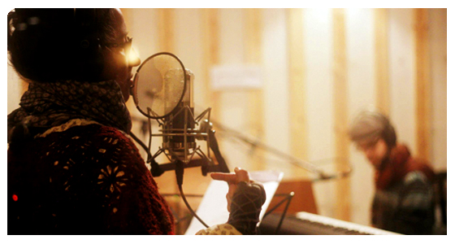

Feb
17
NEW EP - "AMUR"
In this project, the great guys of studio Mitzlol led by Kobi Farhi, go back to the romantic days of analog tape, and record artists with JUST ONE TAKE on ANALOG MULTI-TRACK TAPE!! you can read more and even take part in the project right here (if you happen to be in Tel Aviv during 2013) .
Even though the songs aren't 100% polished (as mentioned - we had only one take and no editing) they still manage to bring forth a diamond-like kaleidoscope to view the songs through, thus hearing the melancholy, hope and beauty of memories and dreams dreamt on the banks of the great Amur river, by the Birobidzhanian poets and us - their fellow Israelis.
The Technicalities took part in a great project called "every Monday and Thursday" (or in short - kol 2 and 5).
Even though the songs aren't 100% polished (as mentioned - we had only one take and no editing) they still manage to bring forth a diamond-like kaleidoscope to view the songs through, thus hearing the melancholy, hope and beauty of memories and dreams dreamt on the banks of the great Amur river, by the Birobidzhanian poets and us - their fellow Israelis.
here are some pictures from the session taken by sound technician (and awesome photographer) Eyal Lanzini